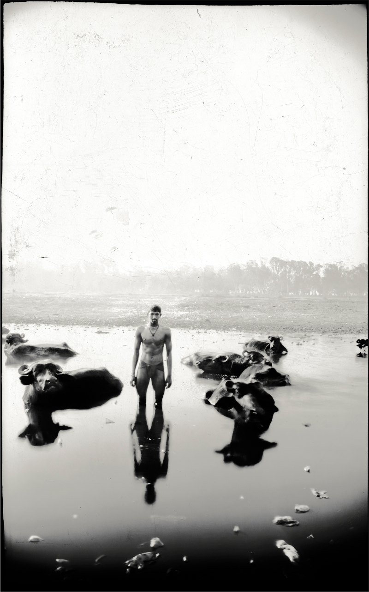

February 9, 2012
Clicking for heaven on Earth
Photographer Malcolm Hutcheson says there’s nothing less interesting than l’art pour l’art*
© Malcolm Hutcheson
Heaven on Earth. It is this universal idea that inspires the photographer Malcolm Hutcheson. “Taking photographs is incredibly rewarding, and I feel very happy after a day’s work when I start to examine the negatives and see the compositions,” Hutcheson told me in an interview. However, he does not like the fact that few people get his photography. It feels like failure, he said, “but if everyone got it, it would be the worst kind of failure.”
He makes photographs that tell stories about the lives of others. “The stories I tell are only significant because most of the media refuses to represent them – my subjects – as individuals. The history of our lives has to contain personal documentation by individuals, as well as the history of grand events, characterised by institutions and corporations, otherwise our humanity is undermined.”
When asked what drives him to continue making photographs, he quoted the popular adage ‘Necessity is the mother of invention’. Regarding the importance of his work, he said, “On a scale of one to ten, what’s the smallest division of zero?”
On the subject of art, the sometimes cryptic and sometimes forthright photographer said, it is basically education or brain exercise. “From an early age, we find joy in learning new experiences. It is pleasurable to make connections within our brain between parts that were formerly unconnected. Our senses are extremely subtle as there’s connection and interpretation within the brain structure. Examining and exercising this stimulates reserves of emotion and intellect. Art provides a direct way of experiencing this process, but it is dependent on the desire to experience something new. Many people find that process destabilising and wish for orthodoxy, which comforts by encouraging certainties.”
On the other hand, Hutcheson’s work is not about art. “To my way of thinking, there’s nothing less interesting than art for art’s sake. It is fetishistic to admire or be overly concerned with the design and workings of a car and spend no thought on where you might go in that car. A car is an efficient means of transport and its design is important, but its purpose is not to define what a car is. Its purpose is to help you get somewhere. Similarly, art’s purpose is not to be art; it is to allow the viewer to experience something; and it is that ‘something’ that is the journey, the transformation, the bridge to another way of being.”
He does his work for many reasons, but none of those reasons includes the idea of making art. Whether or not his work is art is “for others to decide”. He believes that the production of art is both self-interested and altruistic. However, nothing about being an artist attracts him. “I hope, in the end, it may be more useful than baking bread, but there is no guarantee of that.”
The day he realised that his skills are in production and not distribution was the day he realised that he wanted to take up photography. And when he finished his first work, he felt like he had earned his food for the day.
Hutcheson is currently trying to make photographs that show that we are all equal and, therefore, the suffering of one is the suffering of all. “To put it another way, I am trying to show that inequality sucks.”
When asked if others’ works influence his own, he said no man is an island, quoting John Donne. “There is a complex structure of influences that supports all work.” And what his and others’ works have helped him learn about himself is that “how imperfect I am.”
His profound response to stating which part of making art – inspiration, producing art, the tools, or the finished work – is most important was “flour, water, salt, or the oven – which is more important in making bread?”
He appreciates that some people have bought his work, “which means they are prepared to look at it often, and also, since I need the money, that allows me to continue my work; and that is important to me.” However, “what people say to an artist about their work is never the truth or should never be taken for the truth.”
Talking about the worst reaction or comment he has received from someone on his work, he said people often ask him why he insists on showing the ugly side of life. He doesn’t take criticism well. “I try. I think it’s a fault, but there’s something in me that is very determined.” Nevertheless, “understanding who I am is more significant than what my work is. In that way, analysis – not criticism – is important.”
When asked if it’s important that people understand his work, he said he does spend time trying to explain it, but “no, people essentially have freewill and they can decide what is important to them to understand and to enjoy. Some of my friends understand what I do, some don’t and some are too polite to say. I had a fan of my work once and I made work just for that one person, but that did not end well; so, I now try to work because it is work and must be done.”
His work gives him a way of affording food and rent “without having to sell something to someone who does not need it to make someone else rich.” And while his work does not fulfil him, “it is more fulfilling than being an employee – but less than being in love and being loved.”
All his work has been affected by his life experiences, and he puts everything he owns, is, possesses and hopes to have in his work. His family has always supported him, “even though they have seen how hard the process of being a photographer has been and how little chance of having a satisfying life I have through doing it. I think that sort of love is very rare.”
Hutcheson isn’t the only artist in the family, though. “My grandfather worked hard six days a week, and on the seventh day, he either slept or painted. He died shortly after he retired, and I never had a chance to meet him. His paintings were occasionally beautiful.”
When asked about the difference between his finished work and his initial idea of it, he said, “Since my finished work is a series of images that comes from editing a lot of images down to a few over a period of months or years, it is a process. It also relies heavily on the cooperation of others. There is no one piece to visualise and then complete.”
In his photographs, one may find the frequent depiction of “man as mortal, things as changeable and generally degrading, and being or consciousness as pure.” The recurring message that he tries to express through his work is that “compassion is the most important dynamic on which human activity should evolve.”
When asked if politics or current affairs play a role in his work, he said, “The individual politics of seven billion minds changing is of more concern to me than the ideology of those who seek to control our lives and play the games of self-interest and duplicity.” As for religion’s role, he said, “Everything in life is spiritual. Religion, however, is a means to an end. That end, like a lot of religious teachings, is hotly debated.” Regarding the role of travelling, he said, “To know yourself, leave home, travel far, live amongst strangers, and die having learnt something.”
Hutcheson teaches at the Beaconhouse National University in Lahore and hopes that one of his students might be the best work of his life. Regarding the most important thing a potential artist should make sure they never forget, he said, “You get out what you put in.” He said art can be taught to anyone, but “is that the best use of resources? Better teach us something about who we are first.”
He said the government should fund education, but “it does not appear to want to do that. If the government does not fund education, then the people have to educate themselves. The first thing that they need to educate themselves in is how to get rid of a government that does not believe in education, and install one that does. Art education is a lot less important than learning to read.”
Regarding the importance of artists, he said they are about “as important as fishermen, less important than policemen, and more important than cricketers.” He said being an artist in today’s world is “entirely dependent on your wealth – hard if you are poor, easy if you are rich. But it is also extremely difficult to do something that has significance, regardless where you are from.”
Among the deceased, he admires the works of Thomas Annan, W Eugene Smith and Andrei Tarkovsky the most; whereas among the living, his current favourites are Boris Mikhailov, Don McCullin and Anselm Kiefer. His most favourite work is W Eugene Smith’s ‘Tomoko Uemura in Her Bath’.
With reference to art being taboo in the Pakistani society, Hutcheson said, “Is the Pakistani society the one that values money over knowledge, power over compassion? If it is, then it would not be alone in this. It may undervalue art, and, to some extent, fear it; therefore, making it taboo.”
Regarding the purpose of art, he said it’s “the same in all eras. Art, on occasion, gets stuck trying to define itself and its role. Such discussions are of academic interest to only a few. The joy, the knowledge, the experience of art is vast and enabling. Let it continue to be so.”
Regarding artists producing controversial art only because controversy sells, he said, “Why would the artists of the world be any less corrupt than, say, the doctors? If you try to understand, you can use your knowledge to guard against being misled, but it does happen.”
When asked if artists use their work just to make money, he said, “Do doctors heal people because they want to make money? Do they do it because it is a good thing to do? Go see how many free clinics there are compared to how many plastic surgeons. I assume there is the same spread amongst the artists.”
On the supposition that today’s art enthusiasts are mostly fake, he said, “Someone once said that someone is ignorant if they don’t know what you just learnt. If you think other people are being pretentious, you are probably thinking a lot of superficial thoughts yourself. Let people like what they like.”
He believes no artwork is ever perfect. “Perfection, as a concept, is both illusory and boring. But why not hope that the work of art can create a sense of wonder? That may well be achievable. And wouldn’t that be a worthwhile ending?”
* art for art’s sake
First published in Pakistan Today